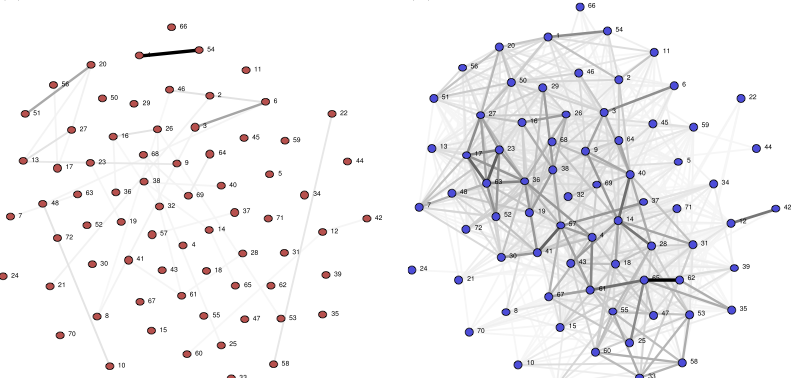
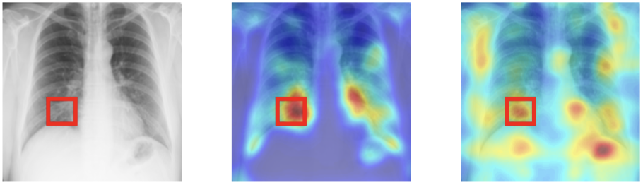

Keywords
Digital Health, Machine Learning, Vision-based Vitals Measurement, Medical Imaging, Digital Contact TracingDigital Contact Tracing

Covid work
Bluetooth-based Digital Contact Tracing pre-Covid
Medical Imaging

Keywords
Digital Health, Machine Learning, Vision-based Vitals Measurement, Medical Imaging, Digital Contact TracingDigital Contact Tracing
Medical Imaging